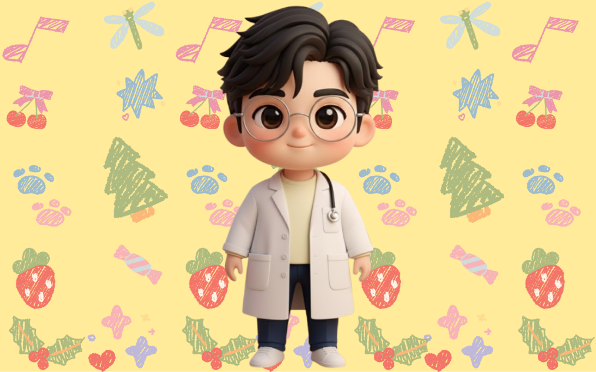

Mini Figure
mini figure yang dibuat langsung sama cewe ter-kece seantero raya gila ya gue gatau sih kepikiran apa bisa punya ide bikin lu versi mini MAU TAU GA GMN BIKINNYA? ya harus mau
View Story →Capturing the stories behind every gift.
mini figure yang dibuat langsung sama cewe ter-kece seantero raya gila ya gue gatau sih kepikiran apa bisa punya ide bikin lu versi mini MAU TAU GA GMN BIKINNYA? ya harus mau
View Story →
Kado yang ga pernah terpikirkan sebelumnya, kado yang menguji kesabaran orang sumbu pendek macam gue tentunya:D dari mulai bikin design aja otak gue udh jungkir balik alias GATAU MAU GAMBAR APA, akhirnya....
View Story →semua ga berjalan mulus kaya yang lu liat barusan sih HEHEHEH gila ya LU HARUS TAU KERUSUHANNYA
Photo Dump →